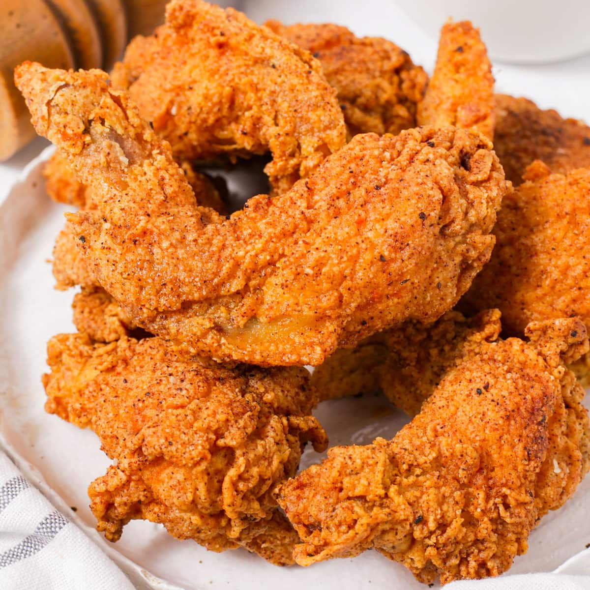

Fried Chicken

Description :
This is a recipe for Korean fried chicken from twoplaidaprons.com. It takes a total 25 mins and makes 16 wings.
Ingredients:
For wings
- 2 pounds chicken wings
- 3 tablespoons water
- 1 teaspoon salt
- 1 teaspoon granulated sugar
- ½ teaspoon onion powder
- ½ teaspoon garlic powder
- Oil (for frying)
For batter
- ¼ cup Korean fry mix
- 2 tablespoons cornstarch
- ¼ cup water
Steps:
- In a large mixing bowl, combine the wings, water, salt, sugar, onion and garlic powder. Mix well until well combined and the water is mostly absorbed. Set aside until needed.
- Combine all of the ingredients for the fry mix in a mixing bowl and whisk until well combined. Set aside until needed.
- In a mixing bowl, whisk together ¼ cup of the store-bought or homemade fry mix, cornstarch, and water until smooth. It will be a very loose batter. Set aside until needed.
- Heat the oil to 335°F for the first fry. Feel free to use a fryer or a pan. If using a pan, make sure to use at least 2 to 3 inches of oil. Also, prepare a sheet pan lined with paper towels or a cooling rack for resting the wings. Lastly, Place about 1 cup of store-bought fry mix or the remaining homemade fry mix in a wide mixing bowl for dry dredging.
- Place the marinated wings into the prepared bowl of wet batter. Make sure to not pour any excess liquid from the marinade into the wet batter and batter in batches if needed. Mix and coat the wings well.
- Place the battered wings into the bowl of dry fry mix. A few or one at a time is recommended and try to let excess wet batter drip off. Dredge the wings well with fry mix. Gently press the fry mix onto the wings if needed. Dredge in batches if needed.
- After dredging in the fry mix, shake the wings to dust off the excess fry mix. Carefully place them into the hot oil and fry for 5 minutes. If needed, occasionally turn the wings to get an even fry. Make sure to not overcrowd the oil and maintain the heat at 335°F. Fry in batches if necessary.
- After 5 minutes, remove the wings and let them rest for 5 minutes on the prepared sheet pan.
- Increase the oil temperature to 350°F and maintain it. After the wings have rested, carefully place them back into the oil and fry for another 4 to 5 minutes, until the wings are cooked through (registering 165°F internally) and the outside is golden and crispy. Remove the wings from the oil and let them rest on the prepared sheet pan for a couple of minutes.
- Enjoy the wings while they are hot, as they are, or tossed in soy garlic sauce or the sweet and spicy gochujang sauce.
home